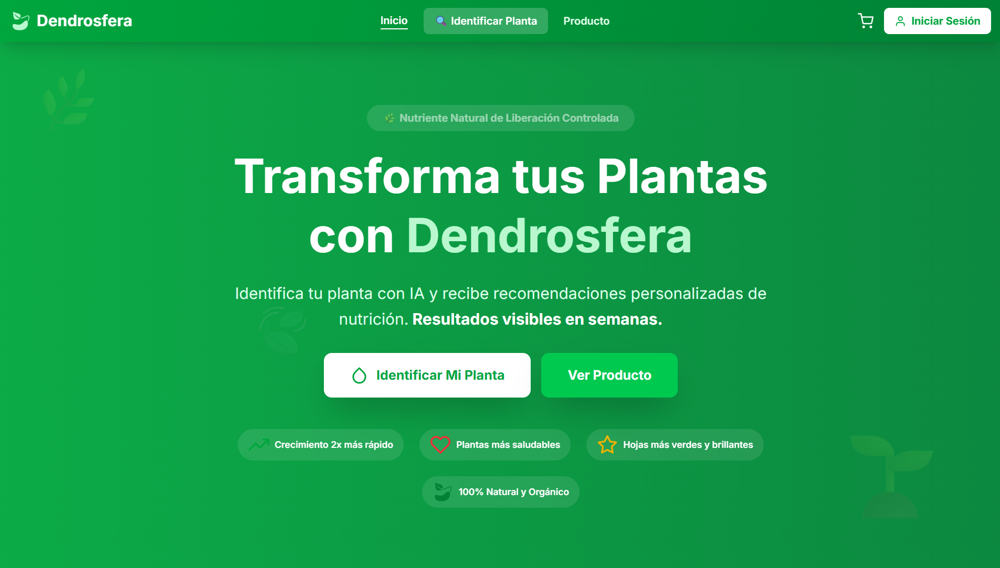
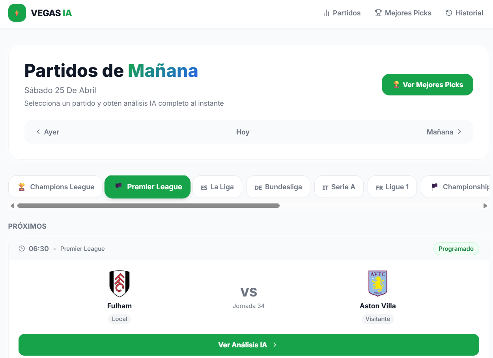
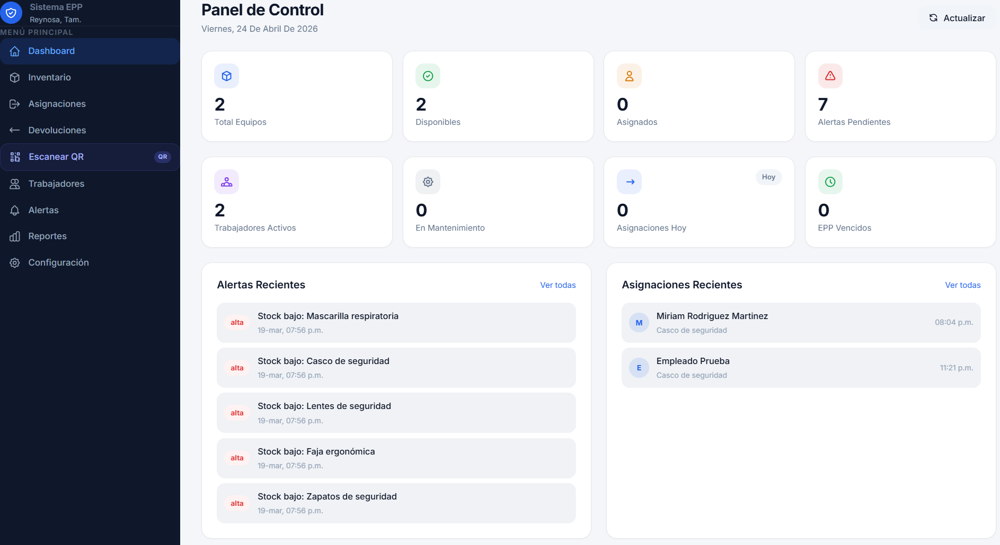
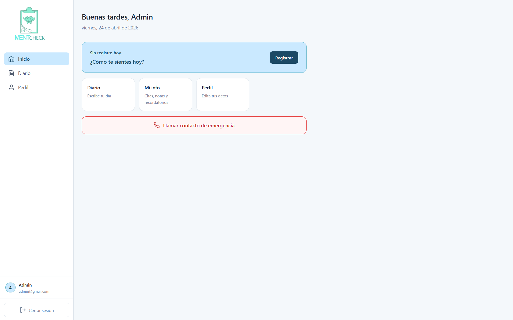

Ver en vivo ↗Plataforma web con base de datos en producción. Gestión de datos con DATABASE_URL dinámica y deploy continuo en Vercel.
Soy Mario Jiménez, desarrollador full-stack. Trabajo con Next.js, React, PHP, SQL Server, Supabase y Vercel para crear productos reales que resuelven problemas reales.
Aplicaciones reales publicadas en Vercel, construidas con tecnologías modernas.

Ver en vivo ↗Plataforma web con base de datos en producción. Gestión de datos con DATABASE_URL dinámica y deploy continuo en Vercel.

Ver en vivo ↗Sistema de análisis con cron jobs automáticos en Vercel — warmup a las 7AM y tracking nocturno programado.

Ver en vivo ↗Sistema de gestión empresarial con autenticación, control de acceso y módulos administrativos.

Ver en vivo ↗Aplicación web de bienestar mental. Seguimiento de estados emocionales con interfaz pensada para el usuario.
Las herramientas con las que construyo aplicaciones de extremo a extremo.
Estudio Desarrollo de Software y en paralelo construyo proyectos reales que me ayudan a aprender más rápido. Me interesa resolver problemas concretos con tecnología: desde sistemas de inventario hasta plataformas web completas.
Trabajo con el stack moderno del ecosistema JavaScript — Next.js, Supabase, Prisma — pero también tengo experiencia con PHP y SQL Server en entornos empresariales con Docker.
Estoy disponible para prácticas profesionales, proyectos freelance y colaboraciones. Escríbeme y hablamos.